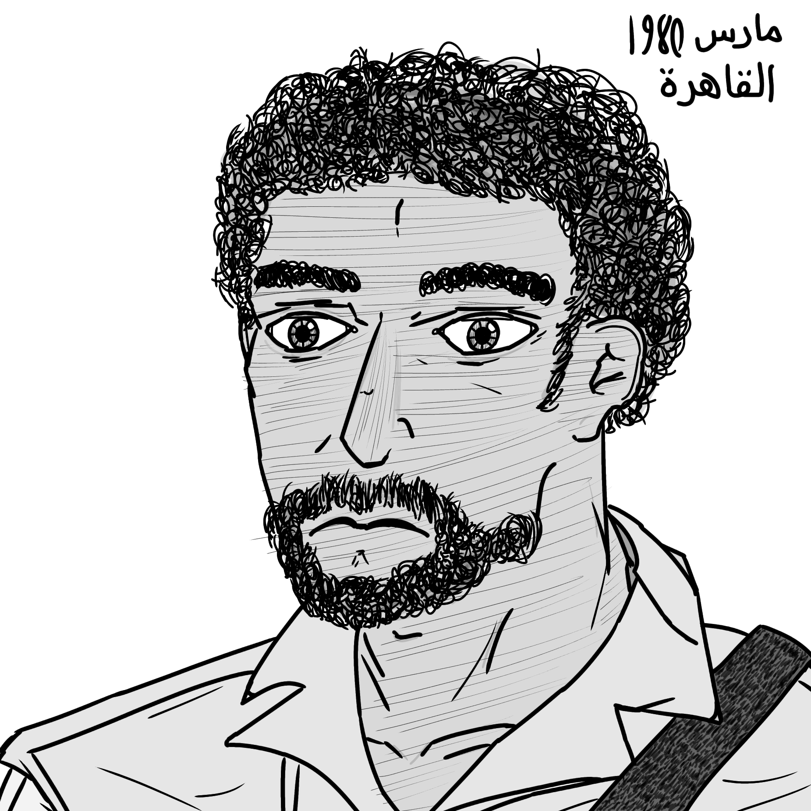

Meet The Phenoms
Amir El-Sayed
Height: 5'8" / 172.2 cm.
Weight: 152 lb. / 69 kg. / 10.8 st.
Blood Type:
Hair Color: Black
Eye Color: Brown
Age: 25
Nationality: Arab Republic of Egypt
Bio: An Egyptian-born soldier who served in the Egyptian Army after finishing school. During the service he saw combat in the Egyptian-Libyan war, being honorably
discharged after being shot thrice in the chest. During his recovery, he met an IDF defector who helped guide him a new-found love in Krav Maga. Later on, he found
sword fighting interesting and began training it as he would any other art. Now, he hones his techniques, hunting alongside his family in rural Egypt.